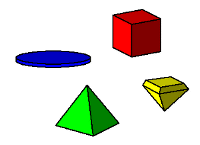
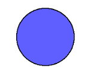

PsiPog.net
So You Think You've Mastered Psi Balls?
by Peebrain
So you can make a psi ball. Now what? It might have seemed cool at first... but now it's just turned into a boring and useless skill. Bummer. But wait... there is hope! Psi balls are made of the most useable substance - ENERGY! Big deal, right? What can energy do? Well let's just try to think of some cool ideas and exercises...
 The first thing that pops into my head is the concept of shapes. Psi "balls"... so limiting... let's change it to Psi Constructs! Who needs a ball of psi? I want cubes, pyramids, diamonds, and flat objects - not just balls. We can think of thousands of shapes... hearts, footballs, cylinders, chairs, bottles, sofas... the list can go on and on.
Alright, you have your favorite shape in mind... so how to create it? Two ways come to the top of my head... One - The same way you've been creating your balls of psi. Visualization! But we have to change it a little for each shape - You can't use a 'swirl' visualization for a cube - it doesn't make sense; cubes don't swirl. So we might want to come up with some more ideas for visualizations that can fit some complex shapes... Hmmm. If we visualize the energy as water, we can imagine it 'floating' around and taking the shape of a cube. Or we can just imagine energy as little cubes, that come together to build one big cube - kinda like legos. Or maybe visualize the energy flowing over the edges like a waterfall, then going back to the top through the middle.
 Another technique might be to make a psi ball the way you normally do... then mold it into a cube. Visualize the ball as clay, the mentally morph or carve it into the shape you want. Maybe you can try to visualize your psi ball as a metal sphere - then 'dent' it into your desired shape. It depends on the shape - if you want a football, try making a psi ball, then (mentally) pinch the ends and give a little pull. Two key points though - One, it should make sense to you. You shouldn't visualize something that seems unnatural - it should be able to flow through your mind easily. And two, be creative for goodness sakes! Don't just do the things I'm listing here, come up with cool original things! Experiment!
Another fun thing to mess with is throwing your psi constructs. I learned how to do this by, you guessed it, visualization! I would pretend to see my invisible psi construct and watch it with my eyes as it flew through the air. I was really just tracing a simple curved path in the air with my eyes, but
after some practice, it did start to work. I would make a hot construct and throw it at a thermometer from across the room then watch the degrees rise. Or I would boomerang one around the room, and catch it. You'd be surprised how fun it is (I am amused easily though  ).
).
Don't forget - you're not limited to one psi construct at a time. Make two or three. As mentioned in one of Rainsong's article, you can try and juggle some. Make a powerful one, 'set' it somewhere, make another, and then combine the two. Mush them together mentally. Or make one in each hand... the left, a fire ball, the right, and a pointy icicle. Who says you have to use your hands? Make them all over your body!
Well, I hope I helped spark some good ideas. As you can see, it truly is only limited by your creativity. Have fun with some of the ideas presented here, and make up some things on your own. If you find something really neat, post it on the message board and see what others think. This stuff is fun! GO! Go
now and have fun  !
!
~Sean (aka Peebrain)
Click here for printable version
Last Modified on May 24 2002
All Content, Images, Video, Text, and Software is © Copyright 2000-2006 PsiPog.net and their respective authors. All Rights Reserved.
You must agree to the Terms of Service and Privacy Policy to view this website. Click here to contact the webmaster.